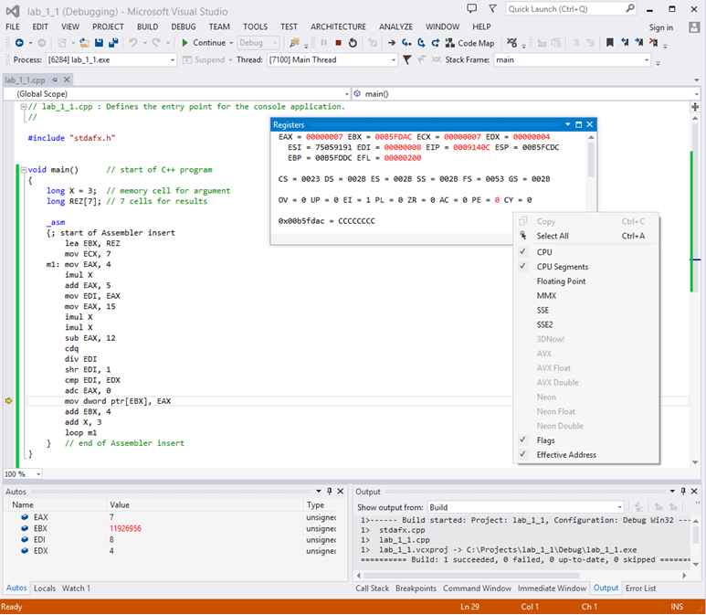
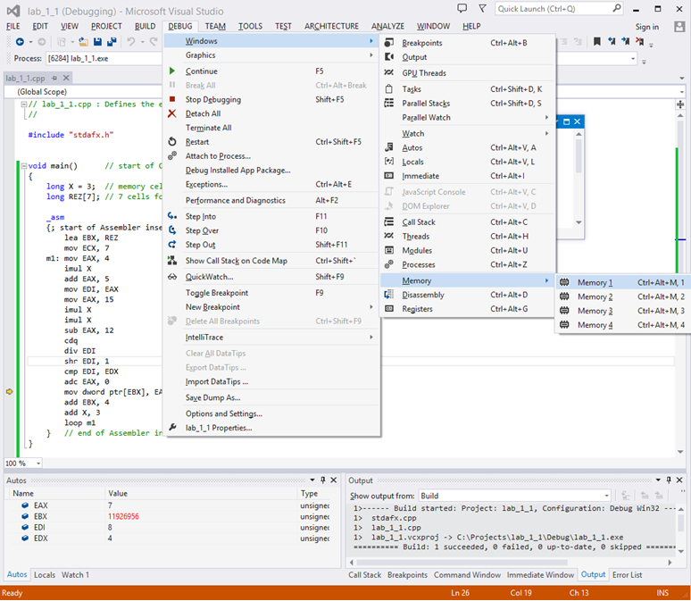
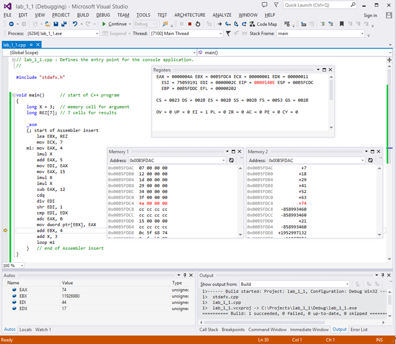

Углубление и закрепление знаний архитектуры прикладного уровня 32-разрядных процессоров семейства x86-64; получение практических навыков по составлению программ на языке ассемблера процессоров x86-64, их отладке и выполнению.
Перед выполнением лабораторной работы студенты должны изучить регистровую модель, базовые типы и форматы данных, ознакомиться с системой команд языка ассемблера СPU х86-64 (приложение А).
При подготовке к выполнению практических заданий следует обратить особое внимание на группы команд целочисленной арифметики, команды сдвигов и команды условных переходов.
Также необходимо иметь представление о работе с программной средой Visual C++ и ее функциональных возможностях в контексте создания и отладки ассемблерных программ, встраиваемых в тело программы на языке C++.
2.3.1 Вычислить 7 значений функции Y = (15 * х^2 – 12) / (4 * x + 5) (х изменяется от 3 с шагом 3). Результат округлить до целого и разместить в памяти.
2.3.2 Определить номер (n) элемента последовательности an = 8^n – 5 * n, при котором сумма элементов последовательности превысит 10000.
2.3.3 В памяти задан массив из 5 элементов. Поместить в регистр EAX максимальный элемент массива, а в регистр EDI - его адрес в памяти.
2.3.4 В памяти задан массив из 8 элементов. Отсортировать элементы массива по возрастанию. Пример «пузырьковой сортировки».
Выполнение работы состоит в разработке, отладке и выполнении ассемблерных программ в среде разработки Visual C++.
После запуска программы Visual C++ в меню «File» необходимо выбрать команду «New». В открывшемся окне выбрать закладку «Projects», на которой:
После формирования папки проекта необходимо ввести программу на языке «С++» с ассемблерной вставкой. Для этого в меню «File» выбрать команду «New». В открывшемся окне выбрать закладку «Files», на которой:
Для компиляции программы необходимо нажать клавишу «F5».
Для пошаговой отладки программы необходимо:
Каждый шаг отлаживается нажатием на кнопку «F10».
При пошаговой отладке промежуточные результаты необходимо контролировать в регистрах CPU или ячейках RAM. С этой целью следует открыть окна «Registers» и «Memory» из меню «Debug»->«Windows». Данная возможность становится доступной после того, как отладка была начата.
В окне «Registers» выбор отображаемых элементов программной модели CPU производится посредством контекстного меню данного окна (рисунок 1.1).

Рисунок 2.1 – Окно отладки «Registers»
В процессе отладки возможно иметь доступ к четырем независимым областям памяти (элементы «Memory n» меню «Memory» на рисунке 1.2).

Рисунок 2.2 – Выбор областей памяти
В окне «Memory n», отображающем выбранную область памяти (например «Memory 1», как показано на рис. 2.3), посредством контекстного меню и поля ввода «Columns» рекомендуется установить соответствующие параметры отображения. Установку начального адреса области памяти следует выполнить с помощью поля ввода «Address».

Рисунок 2.3 – Окно отладки «Memory 1»
Результаты выполнения программы представить в десятичном и шестнадцатиричном форматах.
Вариант 1. Вычислить 7 значений функции Y = 7500 / (2 * х^2 + 15) (х изменяется от 3 с шагом 5). Результат округлить до целого и разместить в памяти.
Вариант 2. Вычислить 6 значений функции Y = (6 * х^2 + 12) / (5 * x – 8) (х изменяется от 2 с шагом 4). Результат округлить до целого и разместить в памяти.
Вариант 3. Вычислить 8 значений функции Y = 5 * x^2 + 2 * x – 14 (х изменяется от 2 с шагом 4). Результат разместить в памяти.
Вариант 4. Вычислить 5 значений элементов последовательности an = 2 * n^2 + 5 (для n от 4 с шагом 1). Результат разместить в памяти.
Вариант 5. Вычислить 6 значений функции Y = (2500 * х – 8) / (3 * х^2 + 20) (х изменяется от 4 с шагом 3). Результат округлить до целого и разместить в памяти.
Вариант 6. Вычислить 6 значений элементов последовательности an = (3^n) / (n + 5) (для n от 1 с шагом 1). Результат округлить до целого и разместить в памяти.
Вариант 7. Вычислить 8 значений функции Y = (8 * х^2 + 12 * х – 7) / (3 * x + 25) (x изменяется от 2 с шагом 3). Результат округлить до целого и разместить в памяти.
Вариант 8. Вычислить 7 значений функции Y = 7 * x^2 + 12 * x – 32 (х изменяется от 3 с шагом 4). Результат разместить в памяти.
Вариант 9. Вычислить 6 значений функции Y = (6^х + 12) /(4* x^2 – 3) (х изменяется от 1 с шагом 1). Результат округлить до целого и разместить в памяти.
Вариант 10. Вычислить 7 значений элементов последовательности an = 3 * n^2 + 11 (для n от 4 с шагом 1). Результат разместить в памяти.
Вариант 1. Найти целое значение аргумента, при котором функция Y = 20000 / (8 * x^2 + 25) станет меньше 20.
Вариант 2. Определить номер (n) элемента последовательности an = n^2 +6 * n + 28, при котором сумма элементов последовательности превысит 1000.
Вариант 3. Найти целое значение аргумента, при котором функция Y = 15 * x^2 + 11 * x – 16 станет больше 2000.
Вариант 4. Найти целое значение аргумента, при котором функция Y = (7^x) / (5 * x^2) превысит 300.
Вариант 5. Найти целое значение аргумента, при котором функция Y = (2000 + х) / (8 * x^2 + 25) станет меньше 10.
Вариант 6. Найти целое значение аргумента, при котором функция Y = 9 * x^2 – 8 * x + 15 станет больше 1000.
Вариант 7. Определить номер (n) элемента последовательности an = 5^n + 8 * n, при котором сумма элементов последовательности превысит 20000.
Вариант 8. Найти целое значение аргумента, при котором функция Y = 7 * x^2 + 25 * x – 27 станет больше 3000.
Вариант 9. Найти целое значение аргумента, при котором функция Y = 300 * х / (8^x + 14) станет меньше 5.
Вариант 10. Определить номер (n) элемента последовательности an = 3* n^2 – 5 * n + 12, при котором сумма элементов последовательности превысит 1500.
Вариант 1. В памяти задан массив из 10 элементов. Поместить в регистр EAX минимальный элемент массива, а в регистр EDX его адрес в памяти.
Вариант 2. В памяти задан массив из 10 элементов. Сохранить в регистре ESI количество отрицательных элементов.
Вариант 3. Рассчитать и сохранить в памяти элементы массива, заданные функцией Y = n! (для n от 1 до 8)
Вариант 4. В памяти задан массив из 10 элементов. Заменить эти числа произведением их старшего и младшего слова.
Вариант 5. В памяти задан массив из 8 элементов. Поместить в регистр EAX максимальный элемент массива, а в регистр ESI его адрес в памяти.
Вариант 6. В памяти задан массив из 9 элементов. Отсортировать элементы массива по возрастанию.
Вариант 7. В памяти задан массив из 10 элементов. Сохранить в регистре ESI количество нечетных элементов.
Вариант 8. В памяти задан массив из 12 элементов. Сохранить в регистре ЕАХ среднее арифметическое этих элементов. Результат округлить до целого.
Вариант 9. В памяти задан массив из 10 элементов. Сохранить в регистре ESI количество единичных битов во всех элементах.
Вариант 10. В памяти задан массив из 11 элементов. Отсортировать элементы массива по убыванию.
Отчет о лабораторной работе должен содержать:
В экспериментально-практической части необходимо привести исходные тексты разработанных программ (на языке C++ с ассемблерными вставками) и результаты их выполнения, полученные в регистрах CPU и (или) ячейках памяти.